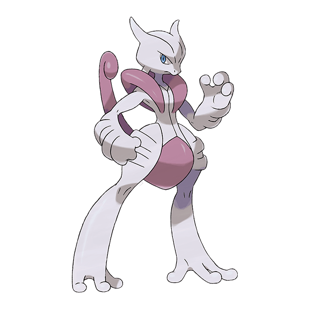

Mega Mewtwo X – Raid Boss Overview
Mega Mewtwo X is a high-tier Mega Raid Boss featuring Mewtwo’s Fighting/Psychic form. It is designed as a late-game challenge rather than a casual raid encounter, and rewards players with Mega Energy for unlocking its Mega Evolution.
Why it stands out
Mega Mewtwo X is considered one of the more demanding Mega Raid bosses due to its raw offensive power and dual typing.
- Combines Psychic and Fighting typing, giving it strong offensive coverage
- Very high Attack stat, making it a fast and aggressive raid boss
- Represents one of the more difficult Mega raid encounters in rotation
Beyond raids, its biggest value comes from unlocking Mega Evolution for Mewtwo, which turns it into a long-term powerhouse for both raids and team support.
- Unlocks Mega Energy for Mewtwo X
- Enables Mega Evolution for Mewtwo in future battles
- Improves overall raid utility once unlocked
Difficulty overview
| Player level | Difficulty |
|---|---|
| Beginner | Very hard |
| Intermediate | Hard |
| Advanced | Manageable |
| Expert | Efficient clears |
Why it feels challenging
Mega Mewtwo X puts pressure on teams through a combination of raw damage output and strong coverage.
- High damage charged attacks can quickly punish underpowered teams
- Dual typing (Psychic + Fighting) reduces safe counter options
- Requires specific counter types for consistent performance
Most successful teams rely on Flying- and Ghost-type attackers such as Rayquaza, Dragonite, Gengar, and Chandelure.
- Flying attackers like Rayquaza and Dragonite provide strong DPS pressure
- Ghost attackers like Gengar and Chandelure offer fast damage output
In most cases, success depends on strong counters, Mega boosts, and high DPS team composition rather than individual Pokémon strength alone.
Mega Mewtwo X Moves Guide
Mega Mewtwo X has one of the most dangerous move pools in Pokémon GO, combining extremely fast Psychic damage with strong Fighting-type coverage. Understanding its moves is key for both using it and fighting against it.
Fast Moves (Quick Pressure)
Its fast moves define how quickly it applies pressure in raids.
| Move | Type | Damage | Energy Gain | DPS | Notes |
|---|---|---|---|---|---|
| Confusion | Psychic | High | Medium | ⭐⭐⭐⭐ | Slow but very strong raw damage output |
| Psycho Cut | Psychic | Low | Very High | ⭐⭐⭐⭐⭐ | Best for fast energy generation and frequent charged moves |
In most raid scenarios, Psycho Cut is preferred because it enables faster Psystrike usage, while Confusion is used for heavier damage focus.
Charged Moves
These moves define its real threat level in raids.
| Move | Type | Damage | Energy | DPS | Notes |
|---|---|---|---|---|---|
| Psystrike | Psychic | Very High | Low | ⭐⭐⭐⭐⭐ | Signature move and core of its damage output |
| Dynamic Punch | Fighting | High | Medium | ⭐⭐⭐⭐ | Strong coverage against Dark and Steel types |
| Focus Blast | Fighting | Very High | High | ⭐⭐⭐ | Powerful but slower and riskier to use |
| Psychic | Psychic | High | Medium | ⭐⭐⭐ | Solid option but outclassed by Psystrike |
Psystrike is always the main reason Mega Mewtwo X is so powerful — everything else is situational coverage.
Elite Moves (Legacy Options)
Some of its strongest moves are legacy-based and require Elite TMs or special events.
| Move | Type | Why It Matters |
|---|---|---|
| Psystrike | Psychic | Core defining move and best overall DPS option |
| Shadow Ball | Ghost | Useful coverage against Psychic and Ghost types |
Among all its options, Psystrike remains mandatory for optimal performance, while Shadow Ball is mainly for coverage flexibility.
Raid Boss Moveset (What you will face)
When Mega Mewtwo X appears as a raid boss, it can use a mix of Psychic and Fighting-type attacks.
- Fast Moves: Confusion, Psycho Cut
- Charged Moves: Psystrike, Psychic, Focus Blast, Dynamic Punch
What makes it dangerous
Mega Mewtwo X becomes difficult mainly because of how its moves interact with common counters.
- Psystrike applies very fast high damage pressure
- Fighting moves punish Dark-type attackers hard
- Confusion adds consistent background damage over time
One of the most dangerous combinations you can face is Psycho Cut paired with Psystrike, as it creates extremely fast charge cycles.
Recommended Moveset (PvE Usage)
- Fast Move: Psycho Cut
- Charged Move: Psystrike
This combination gives the best balance of speed and damage output for raids.
Key takeaway
Mega Mewtwo X is not just strong because of its stats, but because of how quickly it can cycle between fast energy generation and high-damage charged moves. That combination is what makes it one of the most threatening Mega raid bosses.
Mega Mewtwo X Role
Mega Mewtwo X is one of those Pokémon that doesn’t just fit into one role — it can carry PvE content, dominate raids, and clear gyms with ease, all depending on how you build it.
PvE Performance
In regular PvE content, Mega Mewtwo X stands out mainly because of its raw power and dual-type coverage.
- Fighting + Psychic typing gives it near-universal offensive coverage
- Very high Attack stat allows it to delete most PvE targets quickly
- Flexible moveset makes it adaptable for different situations
In practice, it shines in:
- Team Rocket leader battles
- General gym clearing
- Event-based PvE encounters
Raid Utility
In raids, Mega Mewtwo X is not just a damage dealer — it also plays a support role through Mega boosts.
- Boosts both Psychic and Fighting-type attackers in your team
- Can function as either lead attacker or support Mega depending on team setup
It is especially useful in raids against:
- Fighting-type bosses like Terrakion and Regigigas
- Dark-type bosses such as Darkrai and Tyranitar
- Steel-type raid bosses like Dialga and Metagross
What makes it stand out is its flexibility — it doesn’t force you into one role. It can either boost your team or deal top-tier damage itself.
Gym Battles
Offense:
As a gym attacker, Mega Mewtwo X is extremely efficient at clearing defenders.
- Shreds bulky defenders quickly
- Especially effective against:
- Blissey
- Snorlax
- Metagross
Defense:
It has no defensive value in gyms and should never be used for defending.
- Gym offense: Excellent
- Gym defense: Not recommended
PvP / Cup Performance
In special formats, Mega Mewtwo X can be surprisingly strong, but it depends heavily on restrictions.
- Psychic-themed cups: Strong pressure and matchup advantage
- Fighting-themed cups: Good coverage against Steel and Rock cores
- Open Mega formats: High potential, but vulnerable to Fairy and Ghost-heavy teams
Overall Performance Summary
| Mode | Performance |
|---|---|
| PvE | S+ |
| Raids | S++ (elite Mega attacker + team booster) |
| Gyms (Offense) | S+ |
| Gyms (Defense) | Not viable |
| Standard PvP | Not usable |
| Special Cups | A+ to S tier depending on ruleset |
Mega Mewtwo X Raid Strategy Overview
Mega Mewtwo X is not a casual raid boss. Its combination of raw damage, mixed typing, and coverage moves means raid success depends heavily on coordination, team quality, and execution rather than just CP values.
Solo Attempts
Soloing Mega Mewtwo X is not realistically expected for most players.
- High overall bulk
- Strong and fast-charging moveset
- Coverage that punishes common solo counters
Even highly optimized accounts will struggle unless extreme conditions are met.
Duo Performance
Duo raids are possible, but they sit firmly in the “expert-only” category.
Success depends on:
- Both players running top-tier counters
- At least one active Mega for team boost
- Efficient play with minimal downtime
Common duo setup:
- Player 1: Mega Rayquaza or Mega Gengar
- Player 2: Shadow attackers like Shadow Mewtwo, Shadow Chandelure or Darkrai
This setup relies heavily on burst damage — there is very little room for mistakes.
Trio Strategy
Trio is where Mega Mewtwo X becomes realistically manageable for most organized groups.
At this level, raids become more forgiving due to shared damage load and better relobby safety.
- Player 1: Mega Rayquaza (Flying boost role)
- Player 2: Mega Gengar (Ghost burst role)
- Player 3: Shadow DPS core (e.g. Shadow Mewtwo, Shadow Hydreigon, Shadow Chandelure)
Flying and Ghost attackers tend to perform best overall, while Fighting-type counters are generally not preferred due to resistance factors.
Beginner Approach
For newer players, the focus should simply be completing the raid safely rather than optimizing performance.
- Join public raid lobbies
- Use recommended auto-selected teams if needed
Common beginner-friendly attackers include:
- Dragonite (Flying moves)
- Gengar (Ghost moves)
- Tyranitar (bulk filler option)
Most failures at this level come from under-leveled Pokémon or incorrect type choices rather than mechanics.
Intermediate Play
At this stage, players begin focusing on efficiency instead of just survival.
- Build proper type-effective teams
- Reduce unnecessary dodging
- Use Mega boosts intentionally, not randomly
A typical balanced core includes:
- Mega Rayquaza or Mega Gengar
- Shadow Mewtwo
- Shadow Hydreigon
- Yveltal or Chandelure
The main improvement here is maintaining DPS uptime instead of playing defensively.
Advanced Strategy
Advanced groups focus on optimizing damage cycles and minimizing downtime between relobbies.
- Use high-IV or Shadow optimized teams
- Take advantage of weather boosts (Windy or Fog)
- Rotate Mega Pokémon strategically for team buffs
At this level, coordination matters more than individual Pokémon strength.
Expert Level Play
Expert raids are all about precision execution and speed optimization.
- Pre-planned relobby timing
- Perfect team composition for DPS cycles
- Full coordination on Mega rotation windows
In ideal conditions, expert groups can push very fast clears, and in rare cases, even borderline duo attempts become possible.
Overall Difficulty Summary
| Level | Difficulty vs Mega Mewtwo X |
|---|---|
| Solo | Not realistically viable |
| Duo | Very hard (expert coordination required) |
| Trio | Hard but achievable |
| Beginner | Easy participation (public lobbies) |
| Intermediate | Stable clears with proper teams |
| Advanced | Fast and efficient clears |
| Expert | Speed-oriented optimization |
Mega Mewtwo X Counters Guide
TOP COUNTERS
These are the strongest raid attackers you can bring — highest damage and proven performance in the current meta.
| Pokemon | Type | Why it works |
|---|---|---|
| Mega Rayquaza | Flying/Dragon | Best Flying-type damage dealer in Pokémon GO |
| Mega Gengar | Ghost/Poison | Insane burst Ghost damage for fast clears |
| Shadow Mewtwo | Psychic | One of the highest raw DPS Pokémon in raids |
| Shadow Chandelure | Ghost/Fire | Extremely strong Ghost-type attacker |
| Yveltal | Dark/Flying | Great balance of power and survivability |
Why these stand out:
- High DPS makes raids finish faster
- Shadows hit harder thanks to their damage boost
- Mega Pokémon also boost your team’s overall damage
BEST COUNTERS
These Pokémon are slightly less extreme in damage but much easier to use and build for most players.
| Pokemon | Type | Why it works |
|---|---|---|
| Dragonite | Dragon/Flying | Reliable Flying attacker with good bulk |
| Honchkrow | Dark/Flying | Fast damage with strong Flying pressure |
| Giratina | Ghost/Dragon | Bulky option with steady Ghost damage |
| Hydreigon | Dark/Dragon | Strong neutral damage with good resistance |
| Togekiss | Fairy/Flying | Safe and easy option for most trainers |
Why these work well:
- Easier to power up and use in real raids
- Less fragile than Shadow attackers
- Great for consistent performance in longer battles
Counters by Type
Here’s how different types perform against Mega Mewtwo X and why they matter in battle.
Ghost-Type Counters
Ghost attackers are your main source of burst damage in this raid.
- Strong super-effective damage against Psychic typing
- Best used for fast raid phase damage
Top Ghost attackers:
- Mega Gengar
- Shadow Chandelure
- Giratina
- Shadow Mewtwo
Flying-Type Counters
Flying types offer some of the most consistent and safe damage output.
- Strong advantage against Fighting-type moves
- Very reliable across long raids
Top Flying attackers:
- Mega Rayquaza
- Dragonite
- Yveltal
- Honchkrow
Fairy-Type Counters
Fairy Pokémon are not the fastest, but they are very safe to use.
- Resist Fighting-type damage
- Good fallback option for newer players
Top Fairy attackers:
- Togekiss
- Gardevoir
- Xerneas
Dark-Type Counters
Dark attackers provide solid support damage and good matchup coverage.
- Strong against Psychic-type Pokémon
- Useful when Ghost attackers are unavailable
Top Dark attackers:
- Hydreigon
- Yveltal
- Shadow Tyranitar
COUNTER TIER LIST
S+ TIER (TOP META PICKS)
- Mega Rayquaza
- Mega Gengar
- Shadow Mewtwo
S TIER (VERY STRONG)
- Shadow Chandelure
- Yveltal
- Dragonite
A TIER (SOLID OPTIONS)
- Giratina
- Hydreigon
- Honchkrow
B TIER (BUDGET / SAFE PICKS)
- Togekiss
- Gardevoir
- Tyranitar
STRATEGY INSIGHT
Simple breakdown of how this raid actually plays out:
- Ghost attackers = highest burst damage
- Flying attackers = most consistent performance
- Fairy attackers = safest beginner option
- Dark attackers = flexible backup choice
Shiny Mega Mewtwo X – What Changes?
Visual Difference
Shiny Mewtwo and its Mega forms don’t change in power, but the color shift is what makes them special. The difference is very subtle and mostly noticeable in lighting and aura effects.
Comparison Table
| Form | Normal Color | Shiny Color |
|---|---|---|
| Mewtwo | Purple | Greenish / teal tint |
| Mega Mewtwo X | Deep purple with blue aura | Muted green/teal aura shift |
| Mega Mewtwo Y | Purple with pink psychic glow | Faded pink with slight greenish tone |
Battle Performance
Shiny Mewtwo X does not gain any combat advantage. It is purely a visual variant.
- Same CP as regular Mewtwo
- No stat differences (Attack, Defense, HP stay identical)
- Same moveset and raid performance
- No PvP or PvE advantage
Battle Impact Overview
| Feature | Normal | Shiny |
|---|---|---|
| Stats | Identical | Identical |
| Damage Output | Same | Same |
| PvP Performance | No difference | No difference |
| Raid Performance | Same DPS | Same DPS |
Mega Evolution + Shiny Interaction
If you Mega Evolve a Shiny Mewtwo, the shiny form is fully preserved. The Mega evolution simply overlays its own aura style on top of the shiny base.
- Shiny coloration remains active after Mega Evolution
- Mega aura shifts slightly depending on form
- Mega Mewtwo X gets a greenish psychic energy effect instead of deep purple
In simple terms:
- Normal Mega Mewtwo X → purple-heavy psychic aura
- Shiny Mega Mewtwo X → green-tinted psychic aura
Rarity Overview
Here’s how the different versions compare in terms of rarity:
| Form | Rarity |
|---|---|
| Mewtwo | Common Legendary raid boss |
| Mega Mewtwo X | Event-based Mega Raid form |
| Shiny Mewtwo | ~1/20 raid shiny chance |
| Shiny Mega Mewtwo X | Extremely rare collector variant |
Collector Value vs Battle Value
From a collector’s point of view, this is one of the most desirable shiny combinations in Pokémon GO.
However, in actual battles, there is no difference at all between shiny and non-shiny forms.
- Collector value: Very high (prestige + rarity)
- Battle value: No change in performance
Should You Hunt Shiny Mega Mewtwo X?
Worth it if you:
- Enjoy collecting rare shiny legendaries
- Want flex or showcase value
- Are completing a Mewtwo shiny collection
Skip it if you:
- You only care about raid efficiency
- You are focused on PvP performance
- You don’t care about cosmetic variants

Mewtwo
Shiny Mewtwo

Mega Mewtwo X

Shiny Mega Mewtwo X
Evolution & Buddy Distance – Mega Mewtwo X
Mewtwo is one of those Pokémon that doesn’t evolve in the traditional way. Instead of a normal evolution line, it transforms temporarily through the Mega Evolution system in Pokémon GO.
Mewtwo → Mega Mewtwo X (How It Works)
Unlike Pokémon like Charmander or Magikarp, Mewtwo does not evolve into Mega Mewtwo X through leveling or candy. It only changes form using Mega Evolution.
How Mega Evolution Works
| Step | Requirement |
|---|---|
| 1 | Catch Mewtwo from Legendary Raids |
| 2 | Defeat Mega Mewtwo X in Mega Raids |
| 3 | Collect Mega Energy |
| 4 | Unlock Mega Evolution (first time only) |
| 5 | After that, Mega Evolve anytime using energy or cooldown |
Once unlocked, Mega Evolution becomes much easier to use since you don’t need to repeat the unlock process again.
Note: Mega Mewtwo X and Mega Mewtwo Y may require separate Mega Energy, depending on how they are released in Pokémon GO.
- Mega Mewtwo X Energy
- Mega Mewtwo Y Energy
Buddy System for Mewtwo
If you set Mewtwo as your buddy, it helps you slowly build resources while you explore. It’s not required for battles, but it’s very useful for long-term progression.
Buddy Distance
| Buddy Level | Distance per Candy |
|---|---|
| Normal Buddy | 20 km per Candy |
| Excited Buddy | ~10 km per Candy (faster progress) |
What You Get From Walking Mewtwo
Walking with Mewtwo as your buddy helps you slowly power it up over time.
- You earn Mewtwo Candy for powering up and unlocking moves
- In some events, you may also receive bonus Mega Energy
- Building friendship increases overall efficiency
Best Buddy Bonus
When Mewtwo reaches Best Buddy status, it gets a small but useful boost in battle performance when set as your active buddy.
- Slight CP boost when active
- Better long-term investment value
- Helps slightly in non-Mega form battles
How the Buddy System Helps Mega Mewtwo X
Even though Mega Evolution itself doesn’t depend on walking, the buddy system still supports your progress in the background.
- Faster candy collection for powering up
- Better long-term XL candy farming
- Helps prepare a stronger Mewtwo before Mega investment
Quick Summary
| System | What It Does | Why It Matters |
|---|---|---|
| Mega Evolution | Temporary transformation | Massive power boost in raids |
| Buddy Walking | Candy farming system | Helps power up Mewtwo |
| Best Buddy | Small passive bonus | Extra combat efficiency |
Best Mega Counters for Mega Mewtwo X
Mega Mewtwo X is a Psychic / Fighting-type raid boss, which makes it a very interesting matchup. Its dual typing opens up multiple strong counter options, especially Ghost, Flying, and Fairy attackers.
The good news is you don’t need overly complicated teams — a few strong Mega attackers can heavily tilt the raid in your favor.
Top Mega Counters vs Mega Mewtwo X
Mega Rayquaza
Type: Dragon / Flying
Role: Top-tier raid DPS
Mega Rayquaza sits at the top simply because of how much raw damage it brings. Its Flying-type attacks directly punish Mewtwo’s Fighting weakness, making it one of the fastest options for this raid.
Best moves:
- Air Slash + Dragon Ascent
Mega Gengar
Type: Ghost / Poison
Role: High burst damage attacker
If you want pure damage output, Mega Gengar is one of the strongest picks. Ghost-type moves hit Mega Mewtwo X extremely hard due to its Psychic typing.
The only drawback is its low bulk — it hits hard but doesn’t stay long in battle.
Best moves:
- Lick / Shadow Claw + Shadow Ball
Mega Gardevoir
Type: Psychic / Fairy
Role: Safe and consistent counter
Mega Gardevoir doesn’t hit as explosively as Ghost attackers, but it makes up for it with consistency and survivability. Fairy damage also helps against the Fighting side of Mega Mewtwo X.
Best moves:
- Charm + Dazzling Gleam
Mega Latias / Mega Latios
Type: Dragon / Psychic
Role: Balanced support Mega
These two are more balanced options. They won’t top damage charts, but they survive longer and help support bigger raid groups when consistency matters more than raw DPS.
Mega Banette
Type: Ghost
Role: Glass cannon Ghost attacker
Mega Banette is all about damage spikes. It can deal strong Ghost-type damage, but you’ll feel its fragility during longer raid fights.
Mega Counter Tier List
S+ Tier (Best Picks)
- Mega Rayquaza
- Mega Gengar
S Tier (Very Strong)
- Mega Gardevoir
- Mega Banette
A Tier (Support Options)
- Mega Latios
- Mega Latias
Battle Strategy Tips
A solid Mega Mewtwo X raid team usually mixes raw DPS with survivability. You don’t need only Megas — regular strong attackers still play a big role.
- Use Mega Rayquaza to boost Flying-type damage for the team
- Mega Gengar works best for fast raid pressure
- Shadow attackers like Mewtwo, Chandelure, and Hydreigon fill the remaining slots
Final Takeaway
Mega Mewtwo X doesn’t require overly complex strategy — it mainly comes down to using the right Mega boosts and strong Ghost or Flying attackers.
- Mega Rayquaza → best overall raid impact
- Mega Gengar → highest burst damage option
- Mega Gardevoir → safer alternative for longer fights
Candy Bonus & Catch Rewards – Mega Mewtwo X
How catch rewards work after Mega Mewtwo X raids
After defeating Mega Mewtwo X, the catch encounter gives you more than just the Pokémon itself. The real value often comes from the candy and XL candy you can collect during the catch phase.
- Mewtwo Candy for powering up
- Chance of XL Candy for high-level upgrades
- Bonus candy depending on items and boosts
How to increase candy from catches
There are a few simple ways to improve your candy gain after every successful catch.
| Source | Effect |
|---|---|
| Pinap Berry | Doubles candy from catch |
| Silver Pinap Berry | Extra candy + improved catch chance |
| Active Mega Pokémon | Bonus candy when catching same-type Pokémon |
| Rare Candy | Universal candy reward from raids |
| Event bonuses | Occasional 2× or 3× candy boosts |
Mega Evolution candy bonus (important mechanic)
One of the most useful long-term mechanics in Pokémon GO is the Mega Evolution catch bonus. If you have an active Mega Pokémon, you get extra candy when catching Pokémon of the same type.
Example:
- Active Mega Rayquaza → bonus candy for Flying/Dragon-type catches
- Active Mega Gardevoir → bonus candy for Fairy/Psychic-type Pokémon
In the case of Mewtwo-related farming, this would eventually benefit Psychic-type grinding if a relevant Mega is active.
Who benefits the most from candy farming?
This system is especially useful for players who are trying to power up strong Pokémon over time.
Legendary raid players
- More Mewtwo Candy after raids
- Faster progression to max level
- Better long-term resource farming
PvE attackers
- Extra candy = faster power-ups
- XL Candy helps reach level 50 builds
- Useful for Shadow and raid Pokémon upgrades
PvP players
- Candy is needed to unlock moves and power up Pokémon
- XL Candy is required for Master League builds
- Helps reach correct CP breakpoints faster
Mega Pokémon users
Mega Pokémon provide a passive farming advantage while you play normally.
- More candy per catch
- Better efficiency during events
- Long-term resource boost without extra effort
Typical raid catch rewards
After defeating Mega Mewtwo X, your rewards usually include:
Base rewards:
- 3–6 Mewtwo Candy
- Chance of XL Candy
- Premier Ball catch encounter
Boosted rewards:
- Pinap Berry → double candy
- Mega boost → extra candy from same-type catches
- Event bonuses → increased multipliers
Best way to maximize candy
If your goal is farming resources efficiently, this simple approach works best:
- Use Golden Razz Berries for safe catches
- Switch to Pinap Berries when confident
- Keep an active Mega Pokémon during farming
- Take advantage of event bonus periods
Quick takeaway
- More candy = faster power-ups
- XL Candy = long-term endgame strength
- Mega Pokémon = passive farming advantage
Mega Mewtwo X Weaknesses
Mega Mewtwo X is a Psychic / Fighting-type Pokémon, which actually gives it several strong and exploitable weaknesses in raids. If you use the right attackers, it can be defeated much faster than its stats suggest.
Type Weakness Overview
| Attack Type | Effectiveness | Reason |
|---|---|---|
| Ghost | Super Effective | Psychic typing is weak to Ghost |
| Flying | Super Effective | Fighting typing is weak to Flying |
| Fairy | Super Effective | Fighting typing is weak to Fairy |
Ghost-type Counters (Fastest Damage)
Ghost attackers are the most aggressive way to deal with Mega Mewtwo X. They focus on raw burst damage and quick raid clears.
Key moves to watch out for in Ghost attackers:
- Shadow Ball
- Shadow Claw
- Lick
- Hex
Best Ghost counters:
- Mega Gengar
- Giratina
- Chandelure
- Shadow Mewtwo
Ghost attackers are extremely strong, but they are also quite fragile — so timing and dodging matter.
Flying-type Counters (Balanced & Reliable)
Flying-type Pokémon offer a more stable approach. They may not always hit as hard as Ghost attackers, but they survive longer and provide consistent raid performance.
Strong Flying moves:
- Dragon Ascent
- Brave Bird
- Hurricane
- Air Slash
Best Flying counters:
- Mega Rayquaza
- Yveltal
- Dragonite
- Honchkrow
Flying types are often the safest choice for average raid groups.
Fairy-type Counters (Safest Option)
Fairy attackers are the most beginner-friendly option. They don’t rely on burst damage and are much easier to use in longer raids.
Key Fairy moves:
- Charm
- Dazzling Gleam
- Moonblast
Best Fairy counters:
- Togekiss
- Mega Gardevoir
- Xerneas
Fairy types are especially useful for players who prefer safer, more consistent raids over high-risk DPS builds.
Which Weakness Matters Most?
| Weakness | Raid Impact |
|---|---|
| Ghost | Highest damage output (fast clears) |
| Flying | Best balance of speed and safety |
| Fairy | Safest but slower clears |
Best Raid Strategy Using Weaknesses
The most effective way to handle Mega Mewtwo X is to mix damage types depending on your playstyle.
- Ghost attackers → fastest raid clears and highest DPS
- Flying attackers → balanced and reliable performance
- Fairy attackers → safest option for beginners
Weather Effects
Weather can significantly boost certain counter types and make raids easier:
- Fog → boosts Ghost attackers (fastest clears)
- Windy → boosts Flying attackers (strong DPS boost)
- Cloudy → boosts Fairy attackers (safer raids)
Quick Weakness Summary
| Weakness | Best Counters |
|---|---|
| Ghost | Mega Gengar, Giratina-O |
| Flying | Mega Rayquaza, Yveltal |
| Fairy | Mega Gardevoir, Togekiss |
Mega Mewtwo X Resistances
Along with strong offensive pressure, Mega Mewtwo X also has a few useful resistances that help it survive longer in certain raid situations. These don’t make it tanky, but they do reduce damage from specific move types.
Typing Overview
Mega Mewtwo X is a Psychic / Fighting-type Pokémon, which gives it a mix of both offensive power and situational resistances.
Resistance Breakdown
| Attack Type | Effect | Reason |
|---|---|---|
| Fighting | Strong resistance | Psychic typing resists Fighting moves |
| Rock | Moderate resistance | Fighting typing resists Rock attacks |
| Bug | Moderate resistance | Fighting typing resists Bug moves |
| Dark | Strong resistance | Fighting typing resists Dark attacks |
What These Resistances Actually Mean in Raids
In real raid battles, these resistances mainly help Mega Mewtwo X stay on the field a little longer, especially against certain coverage moves.
- Fighting-type moves deal noticeably reduced damage
- Rock and Bug attacks are slightly easier to handle
- Dark-type moves are less threatening due to Fighting resistance
Where Mega Mewtwo X Performs Well
Thanks to these resistances, Mega Mewtwo X handles some situations better than expected:
- Bosses that rely heavily on Fighting-type attacks
- Raid encounters with Rock or Bug coverage moves
- Dark-type attackers in general PvE scenarios
Where It Still Struggles
Even with its resistances, Mega Mewtwo X is still very vulnerable in key matchups:
- Ghost-type attackers with heavy burst damage
- Flying-type Pokémon dealing consistent super-effective hits
- Fairy-type pressure in longer fights
Important Battle Insight
Resistances help with survivability, but Mega Mewtwo X is still more of an offensive Pokémon than a tank. It performs best when it can deal damage quickly before taking too many hits.
- Great in fast-paced raid situations
- Less reliable in long endurance fights
- Best used with strong dodging or support team damage
Quick Resistance Summary
| Type | Impact |
|---|---|
| Fighting | Best survivability boost |
| Rock | Slight durability improvement |
| Bug | Minor damage reduction |
| Dark | Useful defensive edge |
Final Conclusion – Mega Mewtwo X
Mega Mewtwo X is shaping up to be one of the most impactful Mega Evolutions in Pokémon GO. It combines raw offensive power with strong typing coverage, making it a major option for high-level raid teams.
What Mega Mewtwo X actually brings to the game
At its core, Mega Mewtwo X is built around high Attack and flexible damage output. Its Psychic / Fighting typing allows it to perform well in multiple raid scenarios rather than being limited to one niche.
- Strong overall PvE attacker
- Useful Mega boost for raid teams
- Flexible coverage depending on moveset
Why it stands out
Raid impact
In raids, Mega Mewtwo X is expected to be a popular choice simply because it fits into many teams and matchups.
- Works well in both Psychic and Fighting-oriented lineups
- Provides useful Mega damage boost support
- Fits easily into high-level raid teams
Long-term value
Mewtwo has always remained relevant in Pokémon GO, and Mega Evolution only strengthens that position. It is not a short-term raid boss — it stays useful across multiple game updates.
Event importance
Its appearance during major events like Pokémon GO Fest makes it both a competitive and collector-focused Pokémon.
- High interest from raiders
- Strong collector demand
- Long-lasting community relevance
Difficulty Overview
| Category | Difficulty |
|---|---|
| Raid strength | Very high |
| Solo raids | Not realistic |
| Duo raids | Very challenging |
| Trio raids | Possible with strong teams |
| Beginner experience | Better in larger groups |
Best counters recap
The most effective approach against Mega Mewtwo X focuses on three main types:
- Ghost attackers for fast damage
- Flying attackers for consistency
- Fairy attackers for safety
Strong examples include:
- Mega Rayquaza
- Mega Gengar
- Shadow Mewtwo
- Yveltal
- Giratina
Weather effects
Weather can noticeably influence both your counters and the raid itself:
- Fog → boosts Ghost attackers
- Windy → boosts Flying damage
- Cloudy → improves Fairy-type performance
Catch details
After winning the raid, you will encounter Mewtwo, which can later be evolved into its Mega form using Mega Energy.
Typical catch CP ranges:
- Normal hundo: 2387 CP
- Weather boosted hundo: 2984 CP
Shiny value
Shiny Mega Mewtwo X does not change in stats or performance, but it is highly valued for its rarity and visual appeal.
- No gameplay advantage
- High collector value
- One of the more prestigious shiny forms in the game
Final verdict
| Area | Verdict |
|---|---|
| PvE | Top-tier attacker |
| Raids | Strong and widely useful |
| PvP | Situational |
| Gym battles | Very effective |
| Collector value | Very high |
| Difficulty | High-end raid boss |
Mega Mewtwo X Catch CP
After defeating Mega Mewtwo X in a raid, you won’t catch its Mega form directly. Instead, you’ll encounter a normal Mewtwo, and its CP depends on IVs and whether the weather is boosted.
Most players focus on CP because it helps quickly identify high-IV or “hundo” catches.
Base Catch CP (No Weather Boost)
In normal weather conditions, Mewtwo is caught at level 20.
| IV Quality | CP Range |
|---|---|
| 100% IV | 2387 CP |
| High IV | 2350 – 2380 CP |
| Average IV | 2290 – 2340 CP |
| Low IV | 2260 – 2280 CP |
Weather Boosted Catch CP
If the weather is Windy or Cloudy, Mewtwo is boosted to level 25, which also increases its CP.
| IV Quality | CP Range |
|---|---|
| 100% IV | 2984 CP |
| High IV | 2930 – 2970 CP |
| Average IV | 2860 – 2920 CP |
| Low IV | 2820 – 2850 CP |
Hundo CP Values (Most Important Numbers)
These are the two key CP values most players look for after raids.
| Condition | Hundo CP |
|---|---|
| Normal weather | 2387 CP |
| Weather boosted | 2984 CP |
Weather Boost for Mewtwo
Mewtwo benefits from specific weather conditions based on its typing.
- Windy → Psychic-type boost
- Cloudy → Fighting-type boost
Why Weather Boost matters
Weather boosts are useful because they affect both the raid and the catch encounter.
Benefits:
- Mewtwo is caught at a higher level (Level 25)
- Higher CP without extra power-ups
- Stronger Pokémon immediately after catching
Trade-offs:
- Raid boss becomes slightly tougher
- May require stronger counters for new players
Catch Flow (Simple Understanding)
One important thing to remember is:
- You do NOT catch Mega Mewtwo X
- You catch regular Mewtwo after the raid
- Then you unlock Mega Evolution using Mega Energy
Quick Reference
| Catch Type | Level |
|---|---|
| Normal raid catch | Level 20 |
| Weather boosted catch | Level 25 |
Mega Mewtwo X Weather Boost
Weather plays a big role in Pokémon GO raids. It affects how strong the boss becomes, how hard the raid is, and even the CP of the Pokémon you catch afterward.
For Mega Mewtwo X, different weather conditions can either make the fight easier or significantly harder depending on counters and move boosts.
Windy Weather
Windy weather boosts Psychic-type attacks, which directly affects Mewtwo’s damage output.
- Boosts Psychic moves like Psystrike and Future Sight
- Increases overall raid boss damage
- Improves catch CP after the raid
Impact on raid
In Windy weather, Mewtwo becomes more dangerous because its Psychic attacks hit harder, especially against weaker or unprepared teams.
Counter advantage
Flying-type counters also receive a boost, which helps Pokémon like Mega Rayquaza perform even better.
- Mega Rayquaza
- Dragonite
- Yveltal
Cloudy Weather
Cloudy weather boosts Fighting and Fairy-type moves.
- Boosts Fighting attacks like Dynamic Punch and Aura Sphere
- Increases Fairy-type counter effectiveness
- Raises catch CP after the raid
Impact on raid
Cloudy weather makes Mega Mewtwo X more aggressive if it uses Fighting-type moves, but at the same time it also strengthens Fairy-type counters.
Best counters in Cloudy weather
- Mega Gardevoir
- Togekiss
- Xerneas
Foggy Weather
Fog boosts Ghost and Dark-type moves, which is one of the most important weather conditions for this raid.
- Boosts Ghost attacks like Shadow Ball and Shadow Claw
- Greatly increases DPS from Ghost counters
- Makes raids significantly faster for experienced players
Best counters in Fog
- Mega Gengar
- Shadow Chandelure
- Giratina
Sunny Weather
Sunny weather does not significantly affect Mega Mewtwo X or its main counters.
- No major boss boost
- No major counter advantage
- Balanced raid conditions
Rainy Weather
Rainy weather has minimal impact on this raid.
- No meaningful boost for Mewtwo
- No strong counter advantage
Snow Weather
Snow weather also has little to no practical impact on this raid encounter.
- No relevant type boosts
- Neutral raid conditions
Weather Difficulty Overview
| Weather | Raid Impact | Notes |
|---|---|---|
| Windy | Harder | Mewtwo Psychic damage boosted |
| Cloudy | Moderate | Fairy counters become stronger |
| Fog | Easier (for experienced teams) | Ghost DPS becomes extremely strong |
| Sunny | Neutral | No major changes |
| Rainy | Neutral | Minimal effect |
| Snow | Neutral | Minimal effect |
Best Weather for Raids
- Fog → fastest raid clears with Ghost attackers
- Windy / Cloudy → higher CP catches after raid
- Neutral weather → most balanced and consistent difficulty
Catch CP Reminder
When weather is boosted, Mewtwo is caught at a higher level (usually Level 25 instead of Level 20), which directly increases CP and overall stats at capture.
Is Mega Mewtwo X worth raiding in Pokémon GO?
Short answer: yes, but mainly for long-term value rather than immediate necessity. Mega Mewtwo X is more of a “future-proof” raid investment than a one-time hype catch.
Why players care about it
Mega Mewtwo X stands out mostly because of its stats and flexibility. It doesn’t rely on a single role, which makes it useful in different raid situations.
- High Attack stat makes it a strong damage dealer
- Psychic + Fighting typing gives it wide coverage
- Can fit into multiple raid teams depending on moves
Mega boost value
Like other Mega Pokémon, its biggest team value comes from boosting allied damage types.
- Psychic-type attackers get increased damage
- Fighting-type attackers also benefit
- Helpful in both raid damage and team synergy
Where it stays useful
Mega Mewtwo X is not limited to one specific meta. It stays relevant across many raid types:
- Dark, Steel, and Normal-type raid bosses
- General gym clearing situations (Blissey, Snorlax)
- Event farming where Mega bonuses matter
How flexible is it?
It can switch roles depending on how you build it:
- Fighting-type attacker when needed
- Psychic-type attacker in other matchups
- Neutral damage option when type advantage is not available
When it may not be worth it
Not every player needs to prioritize this raid.
- If you already rely on Mega Mewtwo Y, X may feel less urgent
- If you rarely do raids, value drops significantly
- If raid passes are limited, better to focus on priority targets
- If your raid teams are still developing, resources may matter more elsewhere
Value by player type
| Player Type | Value | Reason |
|---|---|---|
| Beginner | Moderate | Raid difficulty can be high without support |
| Intermediate | High | Good upgrade for raid teams |
| Advanced | Very high | Strong addition to meta teams |
| Expert | Priority pick | Useful for optimized raid setups |
X vs Y comparison (simple view)
| Factor | Mega Mewtwo X | Mega Mewtwo Y |
|---|---|---|
| Role | Flexible attacker | Pure Psychic DPS |
| Damage output | High | Higher (specialized) |
| Flexibility | High | Medium |
| Team utility | Very useful | Strong but narrower |
Final take
Mega Mewtwo X is worth raiding if you want a long-term Mega Pokémon that fits into multiple raid roles. It’s not mandatory for casual players, but it becomes very valuable once you start building stronger raid teams.
- Worth it → regular raiders and team builders
- Optional → casual players with limited raid focus
- Skip → if you only care about top single-type DPS picks
Personal Raid Experience – Mega Mewtwo X
Fighting Mega Mewtwo X doesn’t feel like a normal Mega raid. The first thing that stands out is how quickly things can go wrong if you’re not paying attention. It hits hard, and mistakes are punished almost instantly.
First few moments in the raid
My first run honestly felt overwhelming. I expected a strong raid boss, but not one that could start breaking through my team that fast.
- Even strong Ghost-type counters were taking heavy damage
- Charged moves forced constant health management
- The pace felt much faster than most Mega raids
Where things went wrong
Like many players, I went in with full glass cannon attackers and didn’t really adjust my playstyle.
- No proper dodging strategy
- Over-reliance on pure DPS Pokémon
- Ignored survivability completely
It didn’t work well. The team fainted quickly, and I had to re-enter the raid after losing a lot of time.
What changed the second time
In the next attempt, I slowed things down and focused more on balance instead of just damage.
- Mixed Flying and Ghost attackers instead of only glass cannons
- Started dodging charged moves more carefully
- Used Mega boosts more effectively with teammates
The difference was noticeable. The raid felt more controlled, and we finished it much more comfortably.
Team play makes a big difference
This is one of those raids where coordination actually matters. When the group is aligned, everything becomes easier.
- Mega boosts from one player helped the whole team
- Flying attackers lined up well for faster damage
- Boss HP dropped at a much more consistent rate
The most intense part of the fight
The real pressure comes from charged attacks. If you miss a dodge at the wrong time, you can lose a Pokémon immediately.
That creates a constant decision during battle:
- Do you keep attacking for DPS?
- Or stop and dodge to survive longer?
Catch phase
After the raid, the catch phase feels calmer but still requires focus. Mewtwo’s circle is small and timing throws after its attack animation makes a big difference.
What makes this raid stand out
It’s not necessarily the hardest raid mechanically, but it punishes careless gameplay. Even experienced players need to stay alert.
- Dodging actually matters here
- Team coordination improves results a lot
- Mega boosts feel more impactful than usual
Personal rating
| Aspect | Rating |
|---|---|
| Difficulty | 🔥🔥🔥🔥☆ |
| Fun factor | 🔥🔥🔥🔥🔥 |
| Strategy depth | 🔥🔥🔥🔥🔥 |
| Team dependency | 🔥🔥🔥🔥☆ |
Unique Insight – Mega Mewtwo X
More than just a damage dealer
Most Mega Pokémon in Pokémon GO usually fall into one of two categories—either they’re used for raw damage or they’re mainly there for the team boost. Mega Mewtwo X doesn’t really stay in one box.
It naturally sits in both roles depending on how you use it. In some raids, it’s your main attacker. In others, it’s mainly there to strengthen the rest of your team.
Fighting typing changes its real value
The Fighting typing is more important than it looks at first.
It gives Mega Mewtwo X strong matchups against some of the most common raid targets in the game:
- Normal-types like Blissey and Regigigas
- Dark-types like Tyranitar and Darkrai
- Steel-types like Dialga
In practice, this makes it more flexible than many pure Psychic attackers.
Strong stats sometimes override type logic
One interesting thing about Mega Mewtwo X is that its raw Attack is so high that type advantage isn’t always required for it to perform well.
In some situations, it can still compete with Pokémon that technically have the type advantage, especially if they are less optimized.
Mega boost value often matters more than damage
In group raids, the real value of Mega Mewtwo X often comes from its Mega boost rather than its personal damage output.
When used correctly, the boost it provides to Psychic and Fighting attackers can increase the entire team’s performance significantly.
High damage comes with low forgiveness
It hits extremely hard, but it doesn’t take hits well in return.
This creates a simple problem during raids—if you don’t manage dodging properly, it can faint much faster than expected.
It struggles most against:
- Flying-type pressure
- Ghost-type burst damage
Mega X vs Mega Y is about style, not superiority
The difference between the two Mega forms is less about power and more about how you want to use them.
| Form | Role |
|---|---|
| Mega Mewtwo X | Flexible attacker + team support option |
| Mega Mewtwo Y | Pure Psychic damage-focused attacker |
It changes how players think about team building
Traditionally, raid teams were built mostly around type advantage. With Pokémon like Mega Mewtwo X, team building starts to include another layer—Mega synergy.
Instead of just asking “what hits super effectively?”, players also consider:
- What Mega boost benefits the team most
- How damage multipliers stack across attackers
- How to maximize group performance instead of solo output
High risk, high skill ceiling
In PvP scenarios or restricted formats, Mega Mewtwo X would behave like a glass cannon—capable of deleting opponents quickly, but equally easy to punish if misplayed.
It rewards players who understand timing, dodging, and raid rhythm much more than casual tapping.
A long-term investment Pokémon
Even outside current raid metas, Mega Mewtwo X stays relevant because of its Mega utility and strong base stats. It doesn’t feel like a short-term pick—it’s the kind of Pokémon you keep using across different events and raid rotations.
Not beginner-friendly, but very rewarding
It performs differently depending on player skill level:
- New players may struggle to get full value from it
- Experienced players can extract its full potential through better timing and coordination
That gap is what makes it feel powerful in the hands of skilled raiders.
Mega Mewtwo X – FAQ (Frequently Asked Questions)
Here’s a complete FAQ section for Mega Mewtwo X in Pokémon GO
What is Mega Mewtwo X in Pokémon GO?
Mega Mewtwo X is a Mega Evolution of Mewtwo that becomes Psychic/Fighting type. It focuses more on physical combat power compared to its normal and Y form.
When will Mega Mewtwo X be released?
It is expected to debut during Pokémon GO Fest 2026, first in in-person events and then globally.
Can you catch Mega Mewtwo X directly?
No
- You catch regular Mewtwo after the raid
- Then use Mega Energy to evolve it into Mega Mewtwo X
How do you get Mega Mewtwo X Energy?
- By defeating Mega Mewtwo X in raids
- From special research (during events)
- Possibly from bonuses during GO Fest
Is Mega Mewtwo X stronger than Mega Mewtwo Y?
Depends on usage:
- Mega Mewtwo X: Better Fighting-type damage + mixed coverage (versatile attacker)
- Mega Mewtwo Y: Higher pure Psychic DPS (raw damage specialist)
What are the best moves for Mega Mewtwo X?
Recommended
- Fast Move: Psycho Cut / Confusion
- Charged Move: Psystrike + Focus Blast
What are Mega Mewtwo X’s weaknesses?
It is weak to:
- Flying
- Ghost
- Fairy
What are the best counters to Mega Mewtwo X?
Top counters include:
- Mega Rayquaza
- Mega Gengar
- Shadow Mewtwo
- Yveltal
- Shadow Chandelure
Can Mega Mewtwo X be used in PvP?
- Not in regular GO Battle League
- Only in special formats or event cup
Is Mega Mewtwo X good for raids?
Yes — it is expected to be:
- High DPS
- Mega boost for team
- Wide type coverage
Is Mega Mewtwo X worth raiding?
Reasons:
- Top-tier Mega attacker
- Future-proof investment
- Useful in many raids
- Strong Mega boosts
Is Mega Mewtwo X better than normal Mewtwo?
Yes
- Higher stats
- Mega boost advantage
But
- Temporary form
- Requires Mega Energy
How long does Mega Mewtwo X last?
- Standard Mega Evolution duration (several hours)
- Duration increases with higher Mega Level
Can Mega Mewtwo X be shiny?
Yes
- If you catch a shiny Mewtwo → Mega form will also be shiny
Does Mega Mewtwo X boost other players?
Yes
- Boosts Psychic and Fighting-type attacks of all players in raid
Is Mega Mewtwo X good for beginners?
- Very powerful
- Hard to use effectively without good counters
What makes Mega Mewtwo X special?
- One of the highest Attack stats ever
- Dual-type versatility (Psychic + Fighting)
- Meta-defining Mega Evolution
Mega Mewtwo X – Pokédex Overview
Mega Mewtwo X is one of the most powerful and unique Mega Evolutions in Pokémon GO. It transforms Mewtwo into a more physical, Fighting-leaning attacker while still keeping its Psychic identity.
Below is a complete Pokédex-style breakdown covering stats, typing, roles, and battle relevance.
Basic Information
- Pokémon: Mewtwo (Mega Evolution X)
- Form: Mega Evolution
- Pokédex Number: #150
- Category: Genetic Pokémon
- Type: Psychic / Fighting
Height & Weight
| Attribute | Value |
|---|---|
| Height | 2.3 m |
| Weight | 127.0 kg |
Base Stats Overview
Mega Mewtwo X is built for raw attacking power. Its Attack stat is extremely high, making it one of the strongest damage dealers in the game when used correctly.
| Stat | Value |
|---|---|
| Attack | Extremely high (~400+) |
| Defense | High |
| Stamina | Moderate |
Forms & Battle Roles
Mewtwo has two Mega forms, and each one plays a different role depending on how you want to use it in battles.
| Form | Type | Battle Role |
|---|---|---|
| Mewtwo | Psychic | Balanced raid attacker |
| Mega Mewtwo X | Psychic / Fighting | High-risk physical DPS powerhouse |
| Mega Mewtwo Y | Psychic | Special attack-focused DPS monster |
Mega Evolution Notes
Mega Evolution for Mewtwo is a temporary transformation that requires Mega Energy. Once unlocked, it becomes much easier to activate again in future battles.
- Requires Mewtwo Mega Energy
- Temporary battle transformation during raids or gym battles
- Boosts Psychic and Fighting-type performance depending on moveset
Type Effectiveness
Mega Mewtwo X has strong offensive potential, but it also comes with clear weaknesses that can be exploited in raids.
Resistances:
- Fighting
- Rock
Weaknesses:
- Flying
- Ghost
- Fairy
Battle Role in Pokémon GO
Mega Mewtwo X is designed as a high-risk, high-reward attacker. It can deal huge damage, but it is not built to take hits for long.
Strengths:
- Extremely high DPS potential
- Strong type coverage for raids
- Meta-defining Mega attacker
Weaknesses:
- Low survivability compared to tanky Megas
- Can be punished quickly in tough raid fights
Shiny Version
- Uses Shiny Mewtwo as base form
- Noticeable green/teal tail and accent changes
- Mega form retains shiny palette with altered aura tone
Usage Summary
| Mode | Performance | |
|---|---|---|
| PvE | S+ Tier attacker | |
| Raids | Top-tier Mega damage dealer | |
| Gyms | Very strong attacker | |
| PvP | Niche / limited use |
| Throw Quality | Catch Result | |
|---|---|---|
| Excellent + Curve + Golden Razz | High success chance | |
| Great throw + Golden Razz | Moderate chance | |
| Normal throw | Low chance | |
| No berry used | Very low chance |
| Weather | Effect | |
|---|---|---|
| Windy | Boosts Flying attacks (very useful for this raid) | |
| Fog | Boosts Ghost attacks (strong advantage) | |
| Cloudy | Boosts Fighting attacks (danger for this matchup) |
| Mistake | Result | Better Approach |
|---|---|---|
| Wrong counters | Low damage output | Use Flying/Ghost/Fairy attackers |
| No Mega | Weaker overall team | Always include a Mega boost |
| No dodging | Fast fainting | Dodge key charged moves |
| Bad team setup | Slow raid clear | Manually build counter team |
| Catch panic | Missed Pokémon | Use calm, timed throws |